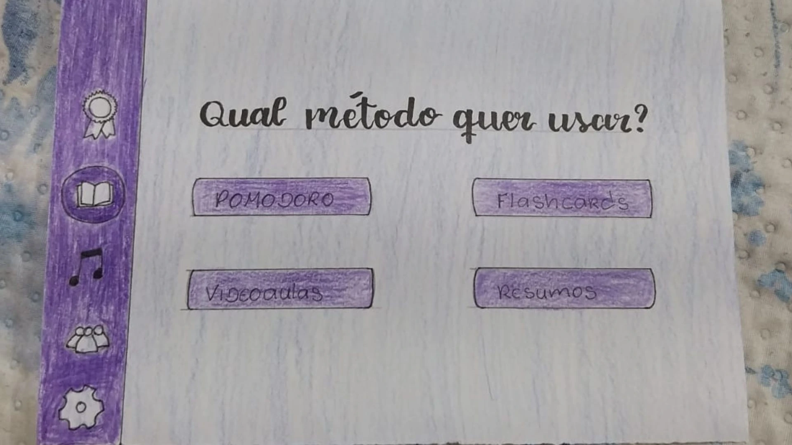
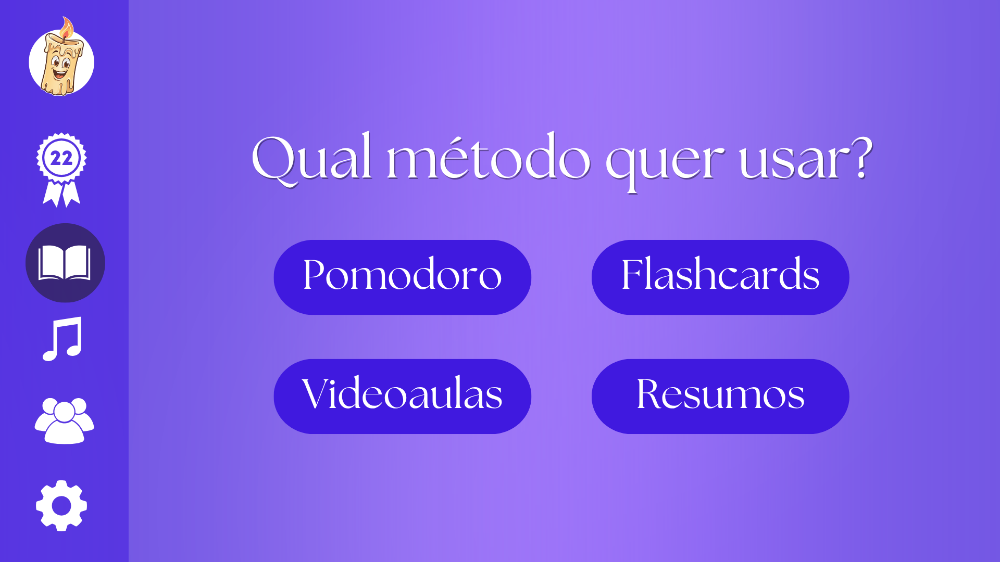
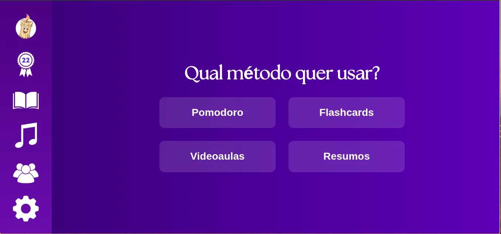
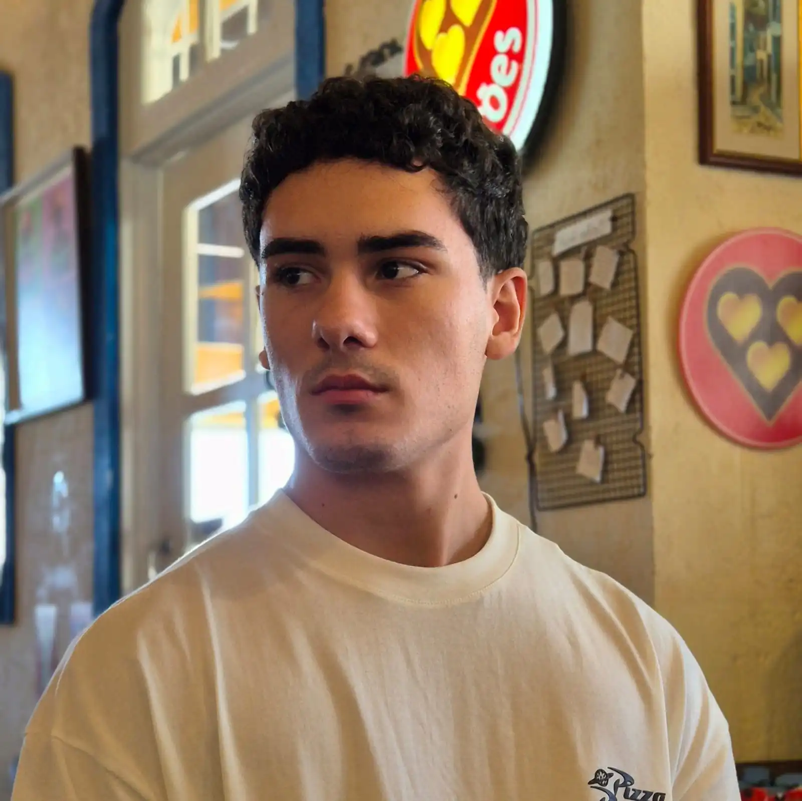

Sobre o Studay
Uma plataforma de estudos criada por estudantes, para estudantes. Nascida de uma necessidade real e construída com criatividade, colaboração e muita vontade de aprender.
A História
A ideia que nasceu no escuro
Tudo começou em um dia diferente no IFPB Campus Santa Luzia. A energia elétrica faltou e, sem computadores ou internet disponíveis, o grupo precisou pensar de forma criativa. Foi exatamente nesse momento que o Studay começou a ganhar forma. O projeto inteiro foi esboçado manualmente.

Do papel ao Canva
Com a energia de volta, o próximo passo foi digitalizar o que estava no papel. O grupo usou o Canva para transformar os rabiscos em um protótipo visual organizado, definindo a identidade visual do Studay: as cores, o gradiente, a tipografia e o mascote Faísca.

O protótipo vira código
Com o design definido, chegou a hora de transformar tudo em realidade. Usando HTML e CSS puros o grupo construiu todas as funcionalidades do Studay: Pomodoro, Flashcards, Resumos, Videoaulas.

Equipe

Lucas Emanuel
Nóbrega de Macêdo
Desenvolvedor
Iasmim Anahí
Alves Silva
Desenvolvedora

Sabrina Yasmine
Araújo da Silva
Desenvolvedora
Professor Orientador
Código Aberto
O Studay é um projeto de código aberto. Você pode ver todo o código-fonte, acompanhar o desenvolvimento e contribuir com sugestões no repositório oficial do GitHub.
Ver no GitHub